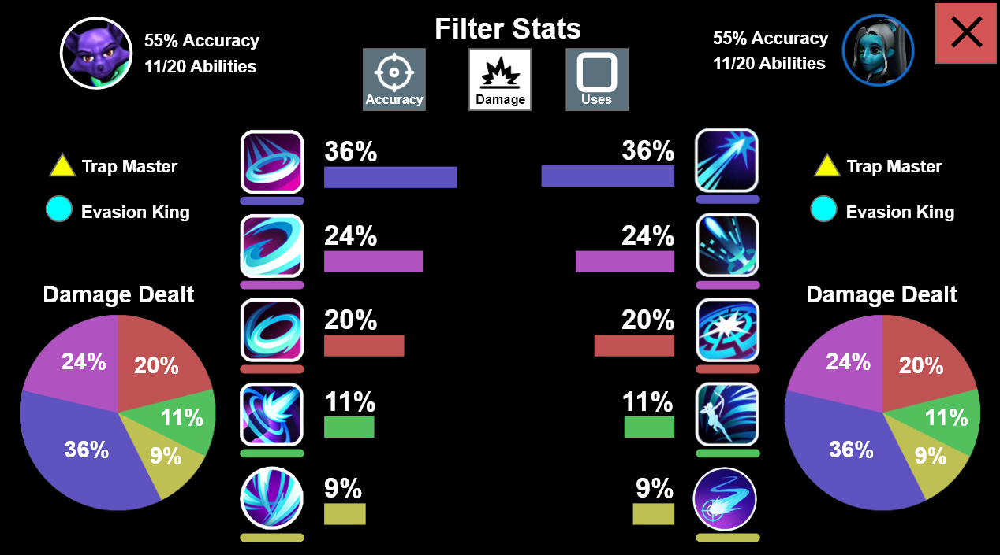
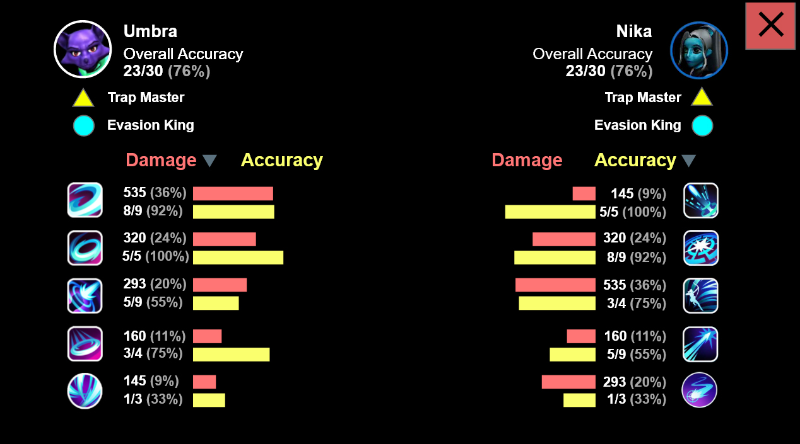
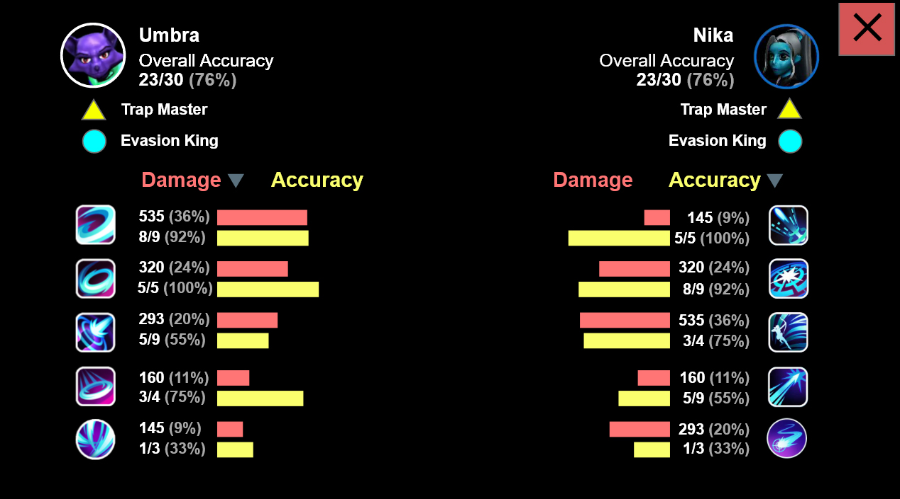
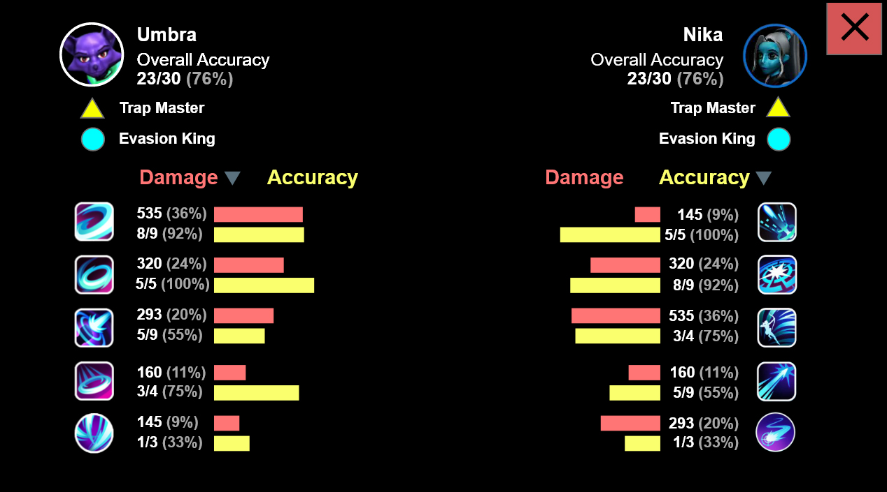

Battleverse Champions
Overview
Battleverse Champions is a free-to-play mobile arena fighting game. It's mechanics are derived from popular games such as Brawl Stars, League of Legends and Vain Glory.
Role
I was responsible for building the layouts, wireframes and userflow of nearly 100 screens after a full game audit was performed. Additionally I mocked up full animation sequences, developed a whole new in-game HUD, and created a fully interactive prototype in Adobe XD.
Audit what's there
A full audit of the existing game was performed to identify key issues and begin to propose solutions. We also build a full userflow of the entire game as it currently stands.


UI/UX Breakdown
All screens of the product are broken down. User motivation, readability, layout, text and button heirarchy, among many other elements are all taken into account. The below images show part of the process to audit a screen, as well as the final version of each screen we ended up with after many iterations.
Solutions and best practices
Depending on the needs of the product, recommendations are made covering all features including systems design and navigation patterns.
Iterations
We would iterate through many different versions of the same content to find a layout that best served the user. Particularly complex screens such as these "match details" layouts proved challenging due to the density of information that needed to be presented.

 


Animation Sequences
When appropriate, I would animate the order the data appeared on the screen. Sequencing the information served a few purposes. First, since there was a lot to communicate to the user, this helped them parse one piece of data at a time. Second, it creates a satisfying response in the user to watch as progress is made towards completing challenges, badges, and character levels. Third, the client was able to clearly understand the timing, motion and order of how the information would animate onto the screen.


Revamped Heads-Up Display
This product had a particularly complex in-game UI and HUD (Heads-Up Display). We greatly simplified the messaging and readability to help the user more easily understand complex situations at a glance.
Screenshots
.png)
.png)
.png)